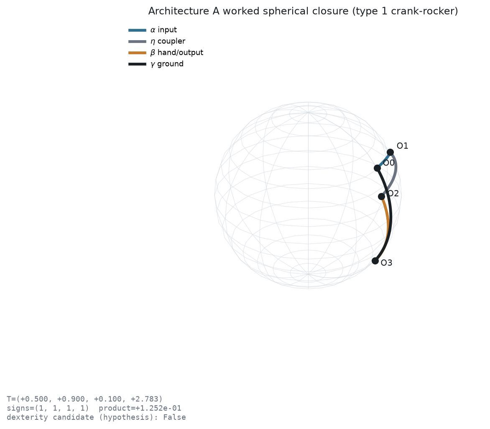
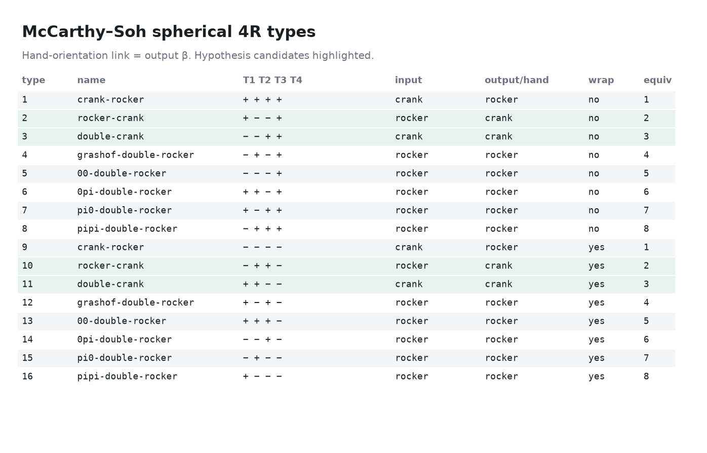
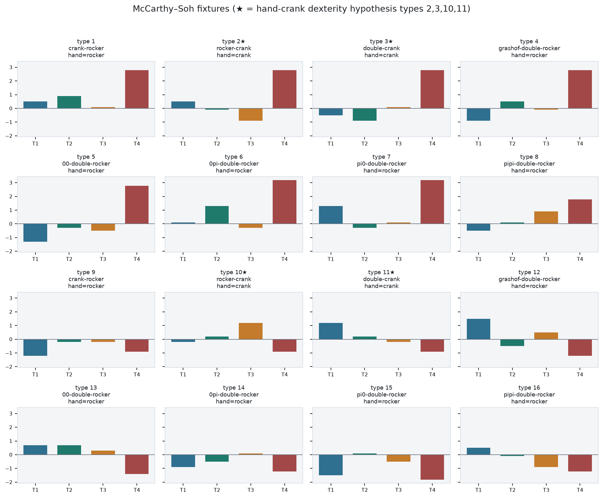
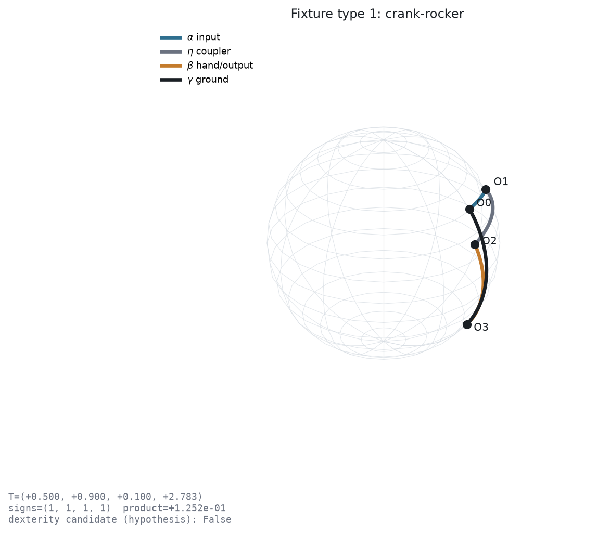
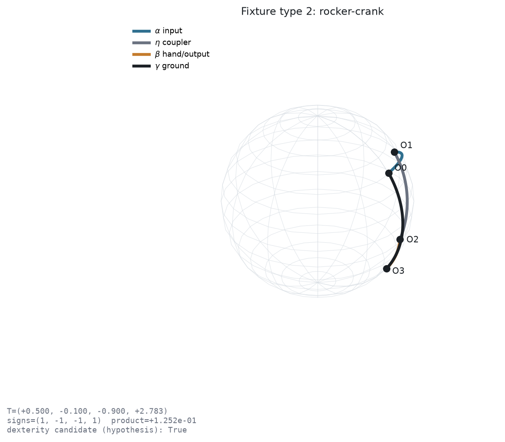
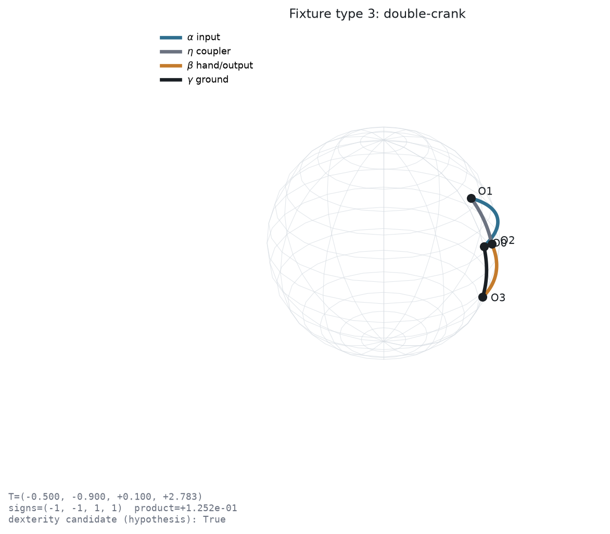
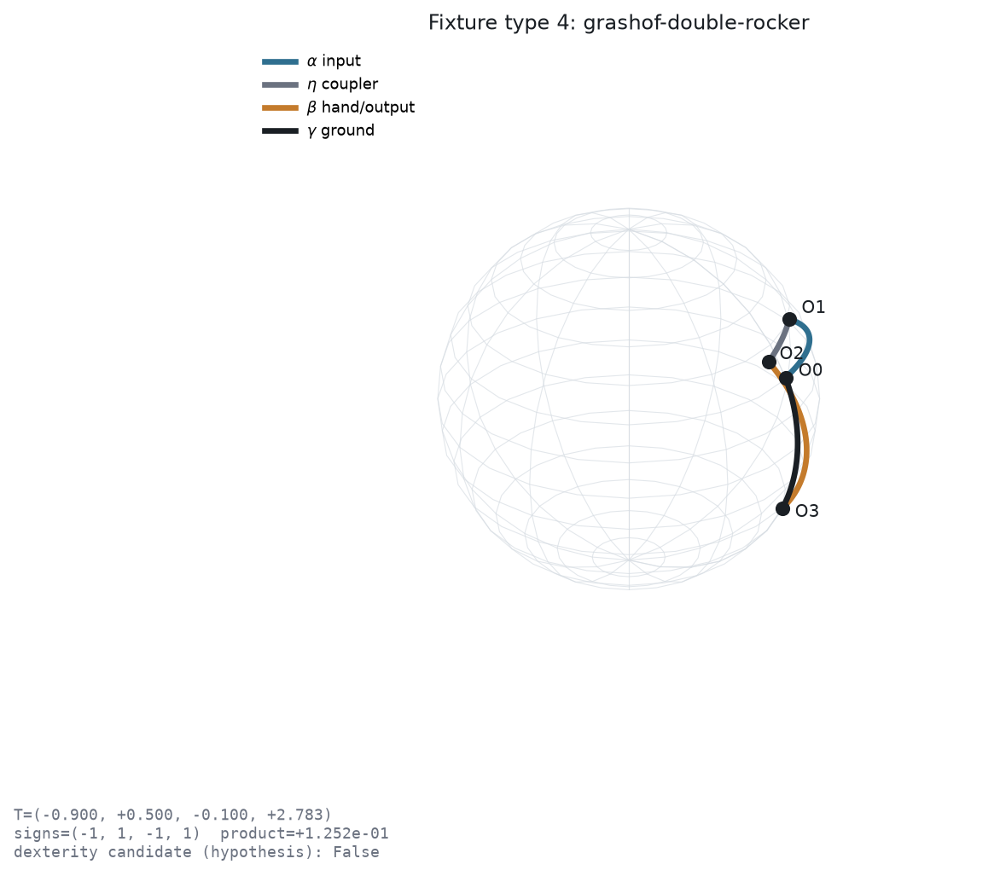
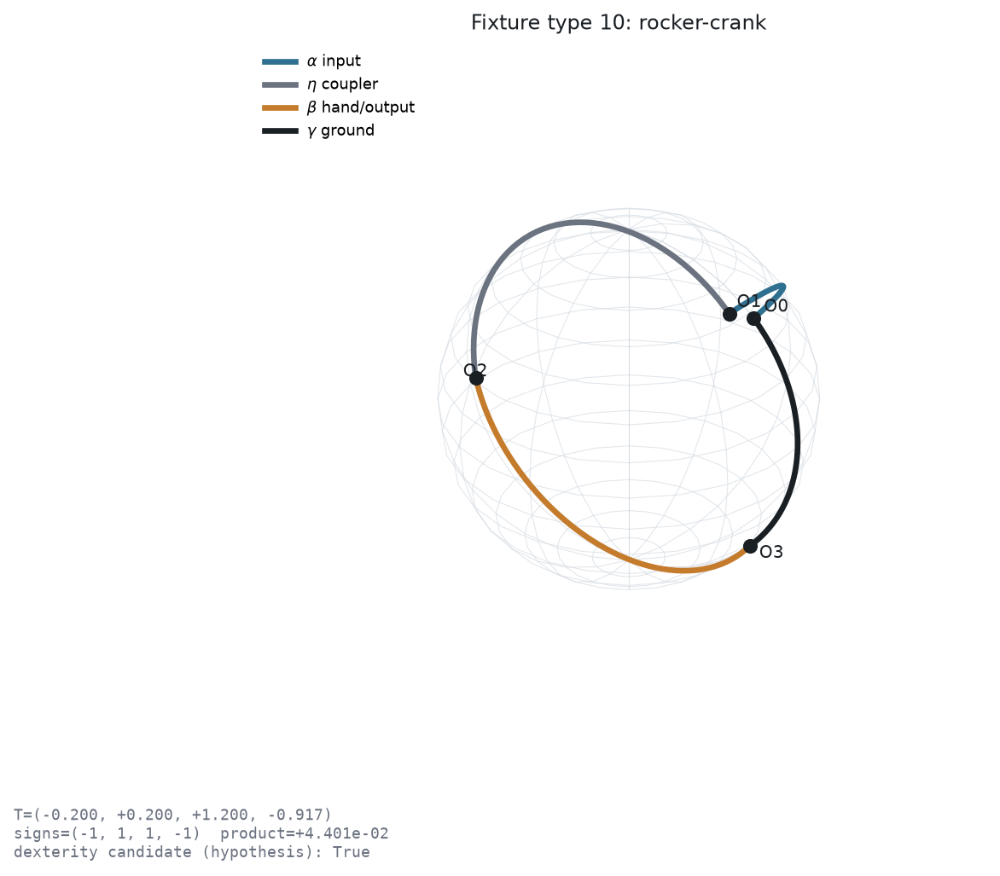

Lock the virtual spherical four-bar convention, evaluate T₁…T₄, and classify all 16 McCarthy–Soh types before any IK sampling.
Grashof product T₁T₂T₃T₄ > 0 is not dexterity. Under the output-hand convention, only types {2, 3, 10, 11} are dexterity candidates (hypothesis).
One Architecture A fiber → one spherical four-bar → one verified T-classification with an explicit hand-link crank/rocker label.


★ marks hypothesis hand-crank types. Interior / exterior / wrap-around fixtures included.

Filter the machine-readable 16-type table. Candidates stay highlighted.
Representative fixtures for basic motion classes plus wrap-around rocker-crank (type 10).




